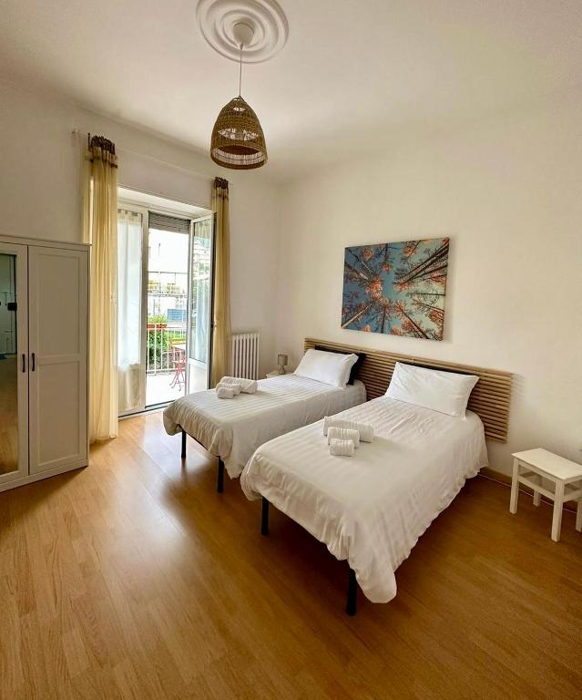
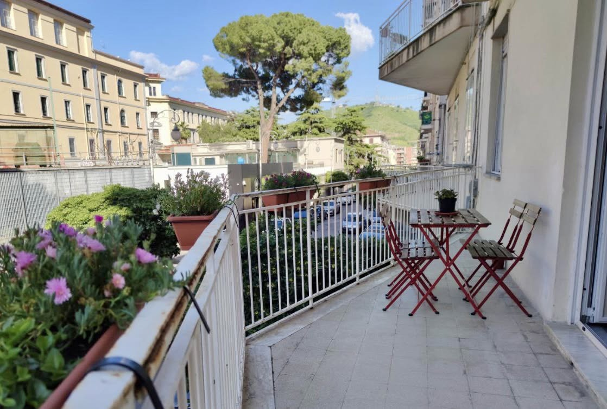
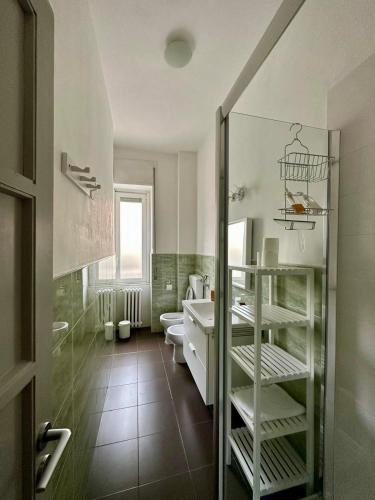
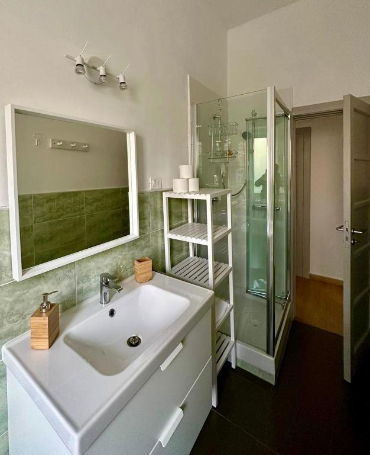
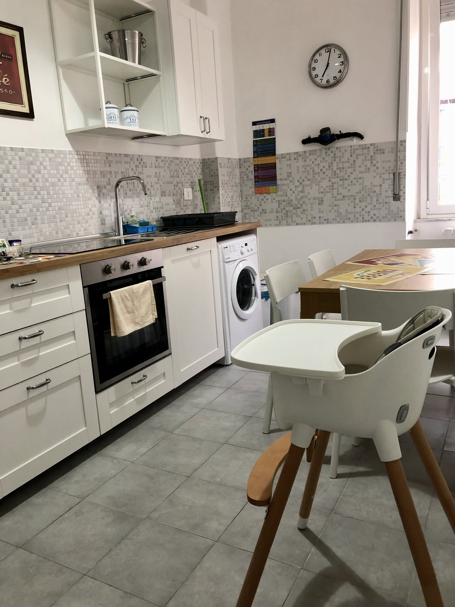
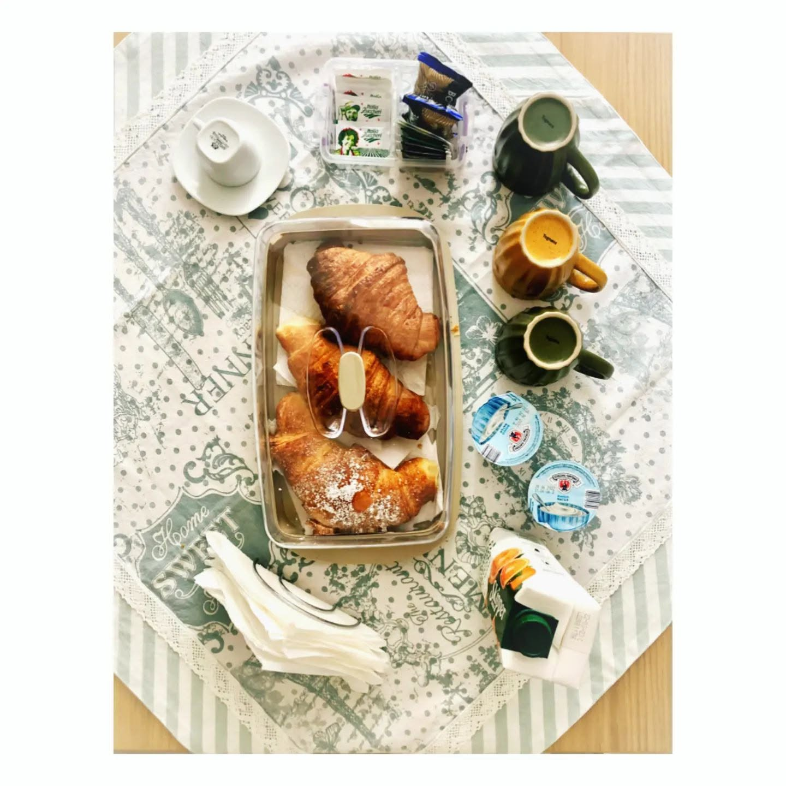
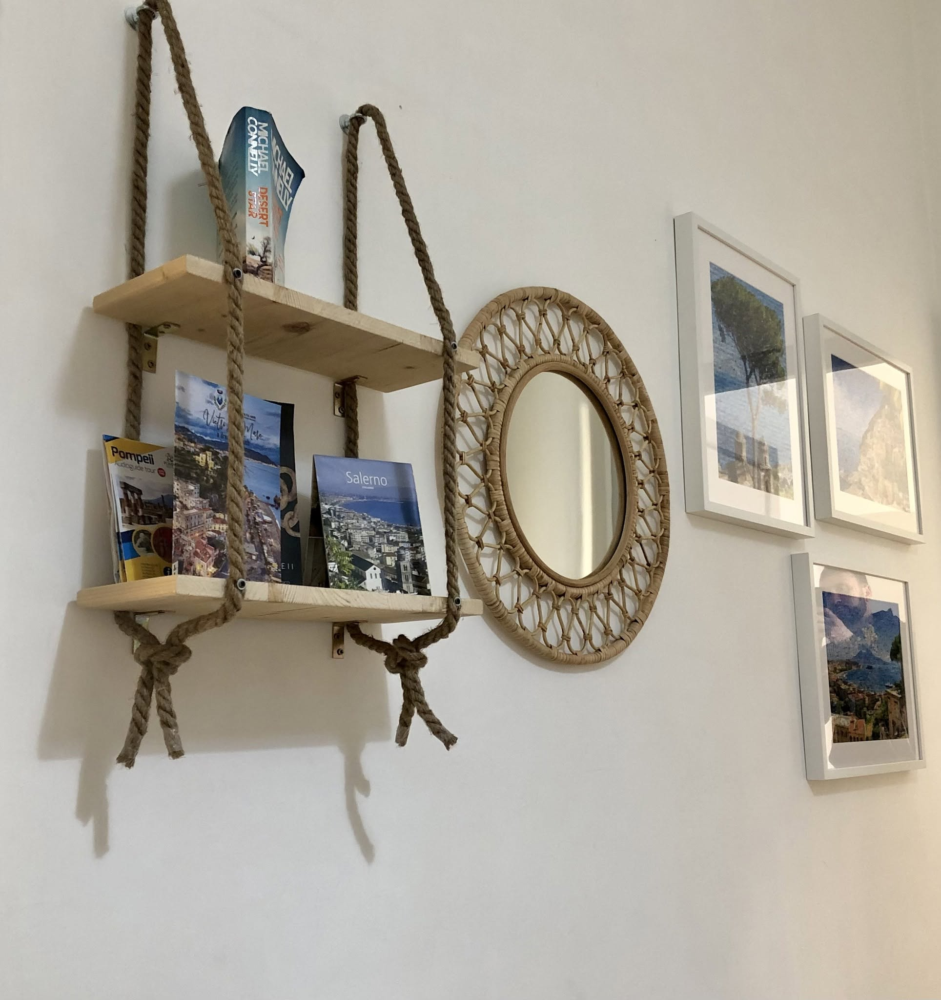

Salerno · Centro storico
Un rifugio autentico sulla Costiera Amalfitana
Due camere luminose, una cucina vera e un balcone fiorito nel cuore di Salerno — a un passo dal mare, dal Duomo e dai traghetti per Capri, Ischia e la costiera.





Benvenuti
Come essere di casa, in viaggio
Su una delle stradine più tranquille del centro storico di Salerno, tra il Duomo e il lungomare, Casa Lamar apre le porte a chi cerca uno spazio vero: due camere luminose, una cucina che si può davvero usare e un balcone pieno di fiori dove far passare il tempo.
Ad accogliere gli ospiti è Mirko, che vive la città e la racconta volentieri — dai vicoli del centro storico ai traghetti che partono ogni giorno per le isole e la costiera.
Le camere
Due camere, tre letti
Una camera con due letti singoli e una matrimoniale: tre posti letto in tutto, con pareti chiare, biancheria fresca e tanta luce naturale.


Camera con letti singoli
Due letti, un balcone
Due letti singoli con testiera in legno e biancheria bianca. Una porta-finestra si apre direttamente sul balcone fiorito, e c'è un armadio per sistemare le vostre cose.


 Culla a disposizione
Culla a disposizioneCamera matrimoniale
Luce, tende verdi e una scrivania
Un letto matrimoniale con lampade ai lati, tende verdi alle finestre e una scrivania per chi ha bisogno di lavorare. Se viaggiate con un bambino, la culla è un accessorio a disposizione.
Il bagno
Un bagno luminoso e comodo
Piastrelle verdi, una finestra sulla luce del giorno, doccia in cabina, lavabo con ampio specchio e uno scaffale per tenere tutto in ordine.


Gli spazi
Cucina vera, colazione servita
Una cucina completa con un grande tavolo per mangiare tutti insieme, e ogni mattina la colazione italiana già pronta.



La terrazza
Dove inizia e finisce la giornata
Il balcone è il posto in cui si fa colazione la mattina presto, tra gli aster rosa e il profilo verde delle colline sopra Salerno, e in cui si torna la sera, al tavolino, quando l'aria si fa più fresca.

Servizi
Ogni comfort, incluso
Colazione italiana
Cornetti, yogurt, succo e caffè ogni mattina.
Wi-Fi in fibra
Connessione veloce in tutto l'appartamento.
Cucina attrezzata
Forno, piano cottura e lavatrice a disposizione.
Terrazza fiorita
Balcone con tavolino e vista sulle colline.
Biancheria e asciugamani
Lenzuola e teli freschi per tutti gli ospiti.
Per le famiglie
Culla e seggiolone a disposizione, se servono.


Piccole cose che fanno casa
Guide, onde e limoni
Nel corridoio, una panca in vimini e una mensola in corda con guide e brochure per scoprire Salerno, la costiera e Pompei. Alle pareti, quadretti illustrati con limoni, onde e scale: lo stesso spirito del logo di Casa Lamar.

Trekking e passeggiate in città
Esperienze speciali con guida escursionistica locale, per scoprire la costiera a piedi e Salerno come un abitante.
- Sentiero degli Dei
- Sentiero dei Limoni
- Valle delle Ferriere
- Alta Via dei Monti Lattari
- City free walking a Salerno

Dove siamo
Nel centro, vicino a tutto
Casa Lamar si trova in Via Michelangelo Schipa 41, in una stradina tranquilla del centro storico di Salerno, a pochi minuti a piedi dal Duomo, dal lungomare e dalla stazione.
- Duomo di Salerno~700 m
- Spiaggia di Santa Teresa~17 min a piedi
- Stazione Centrale~10 min a piedi
- Castello di Arechi~2 km
- Porto di Salerno (traghetti)pochi minuti
Dal porto di Salerno, collegamenti diretti in traghetto verso Capri, Ischia, Procida e Sorrento.
Galleria
Un assaggio di Casa Lamar
Chi è già stato qui
Raccontato dagli ospiti
Mirko si è dimostrato disponibile ben oltre il necessario, con tanti consigli utili sulla zona e la flessibilità di anticipare il check-in quando serviva.
— dalle recensioni degli ospitiAppartamento pulito, silenzioso e spazioso, in un quartiere che ha fatto sentire gli ospiti come dei locali, non dei semplici turisti di passaggio.
— dalle recensioni degli ospitiLa cucina attrezzata ha permesso di preparare la cena più di una volta durante il soggiorno, in una posizione centrale e comoda per muoversi in città.
— dalle recensioni degli ospitiContatti
Vieni a trovarci
Scrivici le date che hai in mente: il messaggio si apre direttamente su WhatsApp e Mirko ti risponde appena possibile.
Casa Lamar
Via Michelangelo Schipa 41, 84125 Salerno
Centro storico — Costiera Amalfitana
Mirko: +39 320 346 9211 (telefono e WhatsApp)